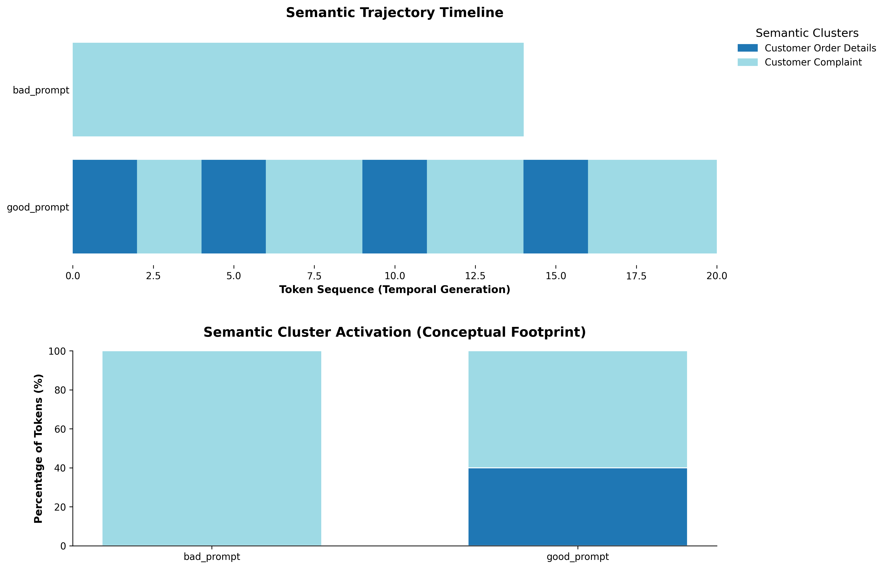
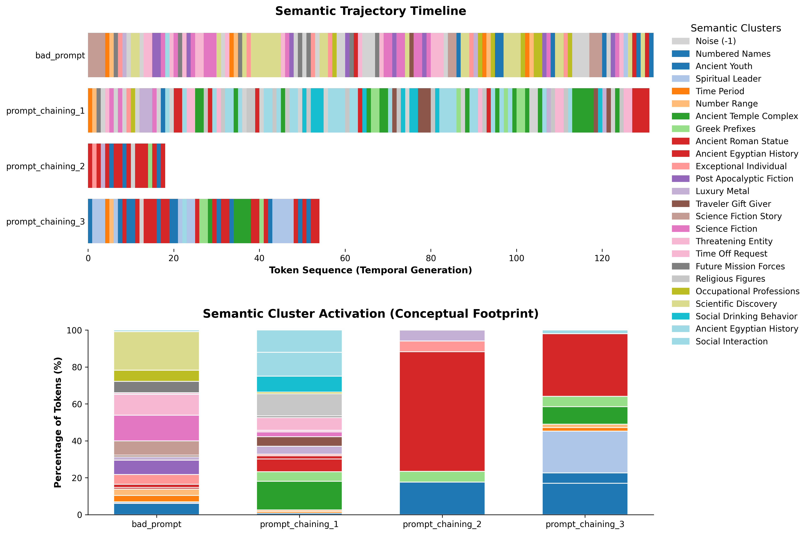
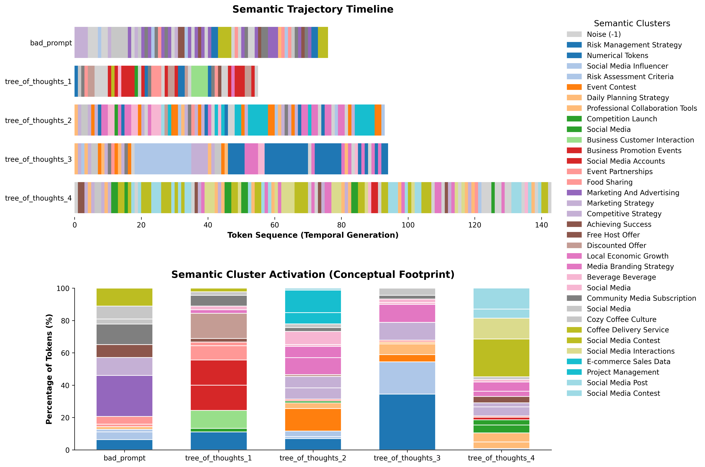

Un approccio di Mechanistic Interpretability tramite visualizzazione degli embeddings
Francesco Dammacco
Universita degli Studi di Bari Aldo Moro — Dipartimento di Informatica
Short Master in Generative AI · A.A. 2025–2026
I Large Language Models basati su Transformer operano su spazi vettoriali con migliaia di dimensioni, rendendo il processo decisionale opaco e difficile da interpretare.
La Mechanistic Interpretability si propone di decodificare i meccanismi interni delle reti neurali, spostando l'analisi dalle valutazioni comportamentali alle rappresentazioni intermedie.
Le tecniche di Prompt Engineering modificano la geometria dello spazio latente durante la generazione?
Ogni token generato e un punto di una traiettoria vettoriale nello spazio latente ad alta dimensionalita.
Costruire uno strumento di analisi visiva che permetta di osservare, in termini spaziali e geometrici, come le istruzioni modifichino il percorso del modello.
Sei famiglie di tecniche di prompting, ognuna con un prompt di controllo (zero-shot) e una o piu varianti strutturate:
Misura la fedelta della riduzione dimensionale: quanti dei k vicini nello spazio originale restano vicini in 3D.
Valuta coesione intra-cluster e separazione inter-cluster. Varia da -1 a +1.
Lo spazio 3D esplorato riflette in modo fedele e strutturato i reali processi interni del modello.
Porzione di "nuovo" spazio latente esplorato dal prompt avanzato rispetto al prompt zero-shot. Basata su voxelizzazione 3D e indice di Jaccard spaziale:
In tutti gli scenari, il modello esplora regioni vettoriali diverse con valori medi superiori all'80%. Few-shot e CoT superano il 95%.
| Tecnica | Divergenza |
|---|---|
| Persona | 85.7% |
| Few-shot | 96.3% |
| CoT | 95.2% |
| Step-back | 80.4% |
| Chaining | 92.2% |
| ToT | 90.3% |

Cluster Activation — Few-shot Prompting
L'imposizione di vincoli di formato crea confini netti nello spazio semantico del modello.

Prompt Chaining — transizione sequenziale tra cluster

Tree of Thoughts — distribuzione ramificata
| Tecnica | Trustworthiness | Silhouette | Divergenza |
|---|---|---|---|
| Persona Prompting | 0.934 | 0.466 | 85.7% |
| Few-shot Prompting | 0.936 | 0.536 | 96.3% |
| Chain-of-Thought | 0.966 | 0.743 | 95.2% |
| Step-back Prompting | 0.959 | 0.412 | 80.4% |
| Prompt Chaining | 0.959 | 0.484 | 92.2% |
| Tree of Thoughts | 0.967 | 0.520 | 90.3% |
Le istruzioni ben strutturate non si limitano a orientare l'output testuale: guidano il modello verso specifiche regioni dello spazio latente, riducendo l'entropia nella scelta dei token successivi.
Il contesto fornito nel prompt modifica la distribuzione dei token, inducendo la formazione di cluster semantici distinti e misurabili nello spazio latente 3D.
La pipeline fornisce un ambiente esplorativo per ispezionare la "scatola nera" della decodifica probabilistica attraverso traiettorie spaziali navigabili.
Dataset ad hoc numerico limitato. Nessuno studio sulla variazione dei parametri. Perdita di granularita nella riduzione dimensionale.
Integrazione con architetture RAG per mappare l'efficacia del retrieval. Tracciamento dei pattern decisionali degli agenti. Adozione di strumenti scalabili (Nomic Atlas).
Pipeline Metrics Viewer kaggle.com/dammafra